ML Deformer Framework
Используйте ML Deformer Framework для обучения моделей, которые во время выполнения будут выполнять высококачественный выбор деформации сетки персонажа.
Создание точных нелинейных систем деформации для объектов скелетной сетки с наложением кожи — сложный и ресурсоемкий процесс, особенно при расчете симуляции деформации в реальном времени. С помощью Unreal Engineмашинного обучения (ML) деформатора вы можете обучить модель ML-деформатора, используя предварительно сгенерированные данные симуляции деформации сетки, для выбора целевых объектов Morph, чтобы аппроксимировать высококачественные деформации сетки во время выполнения. Этот рабочий процесс значительно повышает качество деформации игровых мешей без затрат на вычисления, необходимых для генерации деформации в реальном времени. В этом документе представлен пример рабочего процесса по созданию данных для моделирования деформации сетки в Autodesk Maya, а затем их использованию в Unreal Engine для обучения модели деформации Neural Morph ML с целью создания набора целевых объектов Morph, которые фреймворк может использовать для выбора элементов, чтобы аппроксимировать деформации сетки персонажа во время выполнения. Более подробный обзор и справочную информацию о платформе ML Deformer, редакторе и моделях ML Deformer можно найти в следующей документации:
ML Deformer Framework является плагином и должен быть включен перед использованием. Перейдите в меню Unreal Engine в Правка > Плагины, найдите ML Deformer Framework в разделе Анимация и включите его. После включения плагина вам нужно будет перезапустить редактор.
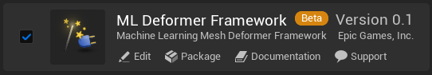
ML Deformer Neural Morph Model является подключаемым модулем и должен быть включен перед использованием. Перейдите в меню Unreal Engine в раздел "Правка" > "Плагины", найдите нейроморфную модель ML Deformer в разделе "Анимация" и включите ее. После включения плагина вам нужно будет перезапустить редактор.
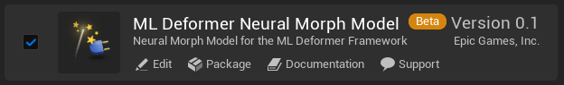
Чтобы сгенерировать необходимые данные о деформации сетки для обучения модели ML Deformer, вам понадобится надежный инструмент для создания цифрового контента (Digital Content Creation, DCC), например Autodesk Maya. Мы предоставили плагин для Maya, с помощью которого можно сгенерировать необходимые данные о деформации для обучения ML Deformer. Однако сгенерированный контент может быть создан с помощью любого инструмента DCC и скрипта, который генерирует случайные позы и корректирует данные о деформации сетки.
У вас есть персонаж со скином в Unreal Engine и Autodesk Maya.
Платформа ML Deformer использует модели ML Deformer для обучения и управления деформациями анимированных сеток во время выполнения. В этом рабочем процессе используется модель Neural Morph, но при желании вы можете использовать другую модель, которая лучше соответствует целям вашего проекта. У каждой модели есть свои преимущества и особенности применения, и доступ к ним можно получить, установив соответствующий плагин. Подробнее о различных моделях ML Deformer см. в документации ML Deformer Models.
Кроме того, вы можете скачать пример проекта (ML) с использованием ML Deformer, в котором демонстрируется деформация сетки персонажа в целом с помощью системы ML Deformer. В примере проекта представлен интерактивный ролик с анимированным персонажем, управляемым Control Rig, в котором можно наблюдать и сравнивать воспроизведение линейной сетки с деформациями, созданными с помощью ML Deformer. Кроме того, вы можете управлять персонажем с помощью альтернативных анимаций, Control Rig правок, переключения видимости одежды и кожи, а также наблюдать за эффектом различных моделей ML Deformer, чтобы отслеживать изменения в сетке и больше узнать о системе и возможностях ML Deformer.
Пример проекта с использованием ML DeformerВы можете скачать с сайта Fab.
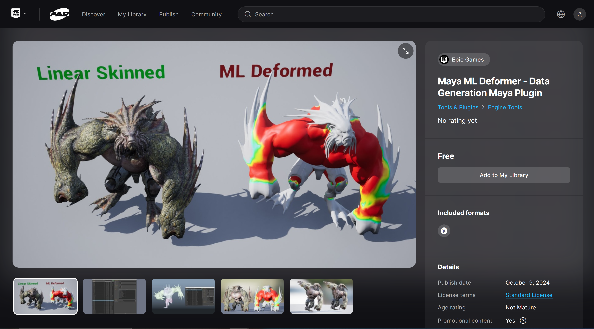
Вам нужно будет скачать и установить плагин Maya для генерации данных ML Deformer. Для этого сначала перейдите на страницу плагина Maya для генерации данных ML Deformer на сайте Fab и скачайте плагин. В этом примере рабочего процесса используется плагин Maya, разработанный Epic Games, для генерации случайных поз нашего персонажа. Однако эти случайные позы могут быть сгенерированы с помощью любого DCC. При желании вы можете написать скрипт, который будет генерировать случайные позы и в других приложениях DCC.
После установки плагин будет находиться в папке Plugins в каталоге установки Unreal Engine. По умолчанию он расположен по следующему пути:
…\Engine\Plugins\Marketplace\MayaMLDeformer\Content\MayaMLDeformer.zip
Распакуйте содержимое MayaMLDeformer.zip в C:\Users\"user name"\Documents\maya\modules.
Если папка modules не существует, вы можете ее создать.
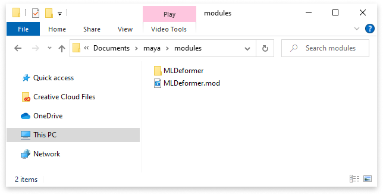
Теперь, когда вы открываете Autodesk Maya, вы должны увидеть UE MLDeformer в строке главного меню.
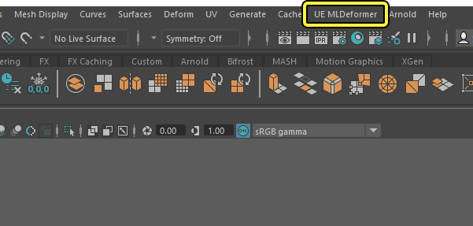
Плагин ML Deformer создает обучающие данные для персонажей, устанавливая процедурные ключевые кадры на костях, которые создают полезный набор данных для алгоритмов машинного обучения. Чтобы запустить процесс генерации обучающих данных, вы должны сначала открыть инструмент. В строке главного меню Maya нажмите UE ML Deformer > Генератор данных, что откроет окно Настройка генерации обучающих данных.
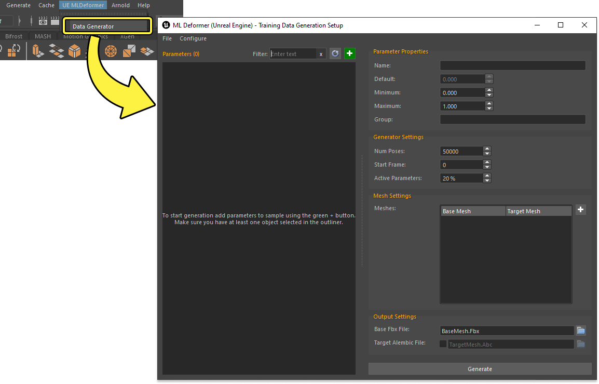
Также импортируйте или откройте своего персонажа со скином в сцене Maya. В этом примере используется MetaHuman.
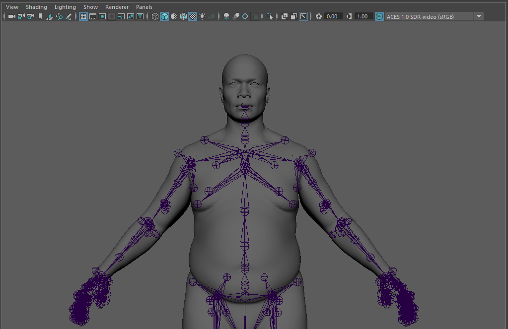
Чтобы обучить суставы, необходимо добавить список узлов и атрибутов, которые нужно изменить, а также диапазон значений, которые могут принимать эти атрибуты. Выберите все суставы сетки, которые хотите добавить, и нажмите Добавить (+) в разделе Параметры окна Настройка генерации обучающих данных.
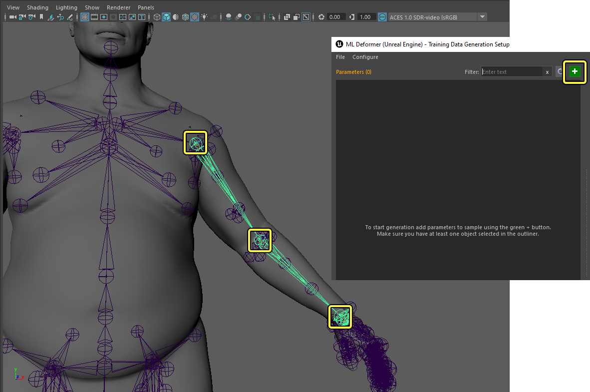
После выбора Добавить (+) и выделения сочленений сетки откроется окно Добавить параметры, в котором вы сможете дополнительно указать, какие атрибуты сочленений вы хотите использовать в обучении. Вы также можете нажать Обновить, чтобы обновить список параметров в соответствии с вашими текущими настройками.
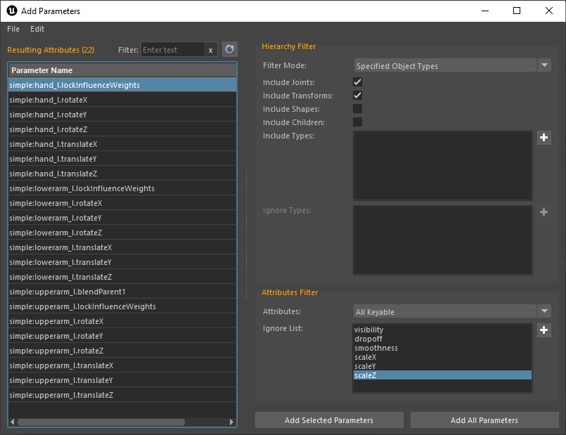
Выберите атрибуты суставов, которые хотите добавить в качестве параметров, затем нажмите Добавить выбранные параметры, чтобы добавить их в настройки генерации обучающих данных. В большинстве случаев из суставов нужны только атрибуты вращения.
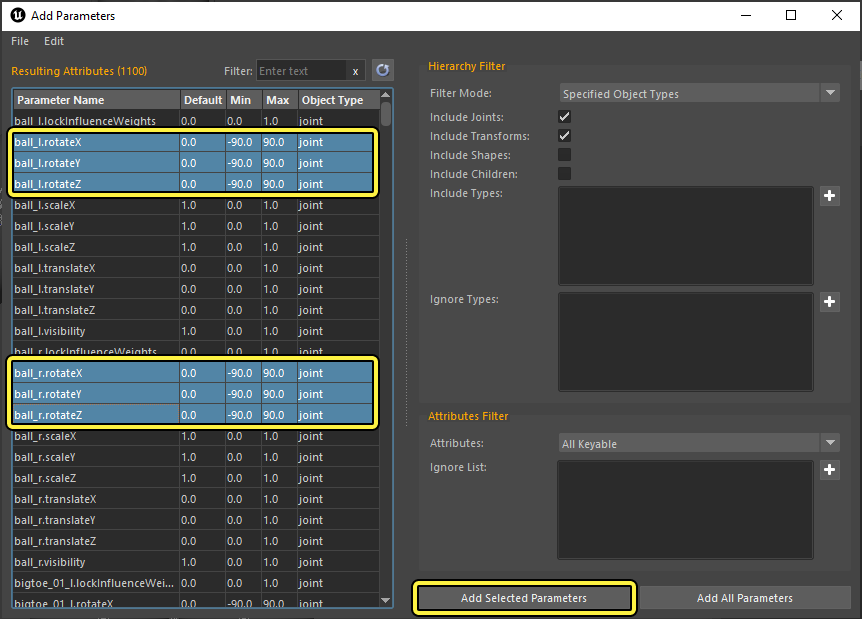
В разделе Фильтр атрибутов можно автоматически уточнять и исключать атрибуты. Нажмите Добавить (+), чтобы добавить новую запись и назвать ее в соответствии с атрибутами, которые вы хотите исключить. В этом примере рабочего процесса добавьте в список следующие записи: lockInfluenceWeights, scaleX, scaleY, scaleZ, translateX, translateY, translateZ, visibility, dropoff и smoothness.
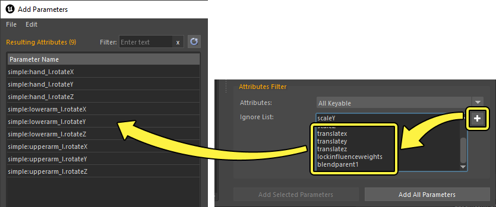
. После добавления атрибутов вам нужно будет настроить диапазон движения для каждой оси. Для этого выберите каждый атрибут и укажите минимальный и максимальный диапазон движения для этой оси в свойствах параметра. Эти значения должны быть максимально реалистичными в зависимости от сложности и типа персонажа. Эти данные необходимы для точности и качества процесса обучения ML Deformer. Плагин автоматически инициализирует значения в соответствии с ограничениями, заданными в Maya для этого сочленения, если они установлены. Вы также можете задать значения по умолчанию для определенных типов параметров.
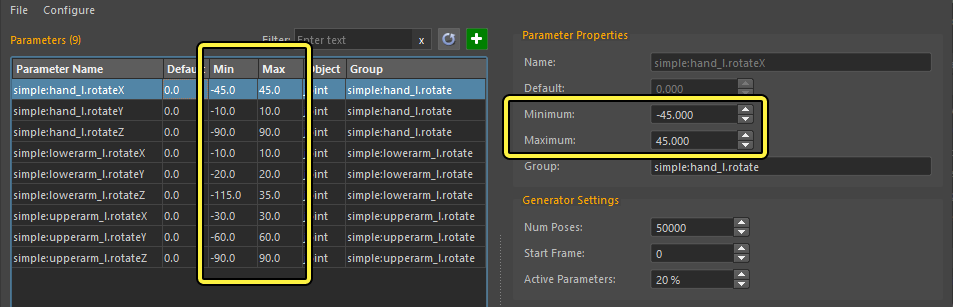
Правильная настройка этих параметров может занять много времени, поэтому мы рекомендуем вам сохранить достигнутый прогресс в виде .json файла, нажав Файл> Сохранить конфигурацию.
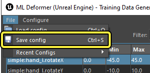
Вы можете восстановить сохраненную конфигурацию, выбрав Файл> Загрузить конфигурацию. Файлы конфигурации основаны на именах узлов и атрибутов и могут использоваться в любой сцене Maya с соответствующими именами.Чтобы завершить подготовку обучающих данных, необходимо указать базовую сетку и, при необходимости, целевую сетку. Базовая сетка — это сетка, привязанная к скелету. Она аналогична ресурсу Skeletal Mesh, используемому в Unreal Engine, и поддерживает линейную скиннинг-систему. Целевая сетка — это отдельная сетка, которая содержит те же вершины и имеет ту же топологию, что и базовая сетка, но используется для деформации. Например, в целевой сетке могут применяться методы сохранения объема и имитация работы мышц для создания реалистичной деформации. Целевая сетка может существовать внутри Maya или быть создана во внешней программе, например в Houdini. Целевая сетка экспортируется в виде алебастрового кэша .abc. Чтобы указать базовую и целевую сетки, нажмите Добавить (+) в разделе Настройки сетки. Появится окно, в котором вы можете нажать кнопку Выбрать и указать каждую сетку. Целевая сетка необязательна, если только она не присутствует в вашей сцене.
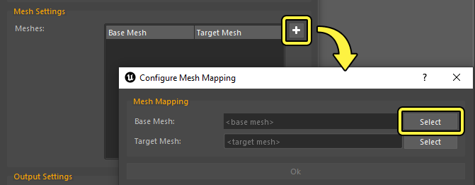
Выберите сетки и нажмите ОК, чтобы добавить их в список настроек сетки.
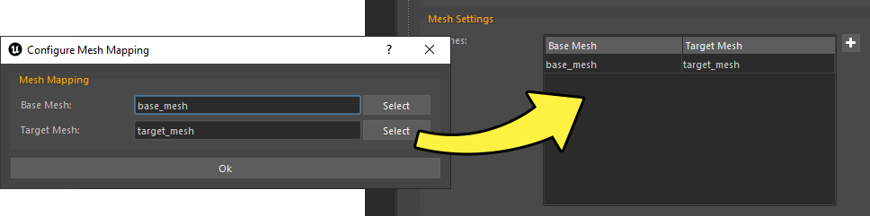
Если ваша скелетная сетка состоит из нескольких сеток, вам нужно добавить каждую из них в список настроек сетки. Обычно это требуется только при использовании модульных персонажей.
Наконец, необходимо указать настройки генератора, чтобы задать продолжительность и конфигурацию обучения. Для каждого атрибута в списке параметров будет создан ключевой кадр для каждого из количества поз.
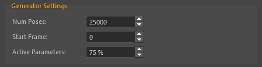
Нажмите Создать, чтобы начать процесс создания обучающих данных в Maya. Если вы используете целевую сетку и целевой файл Alembic, этот процесс может занять очень много времени. Убедитесь, что на диске достаточно свободного места, так как файл Alembic может быть очень большим (от 50 до 100 гигабайт) в зависимости от количества вершин и параметра «Количество поз».
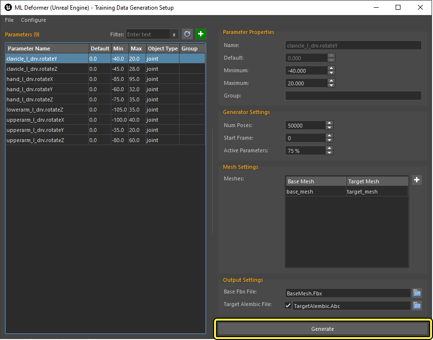
После завершения генерации обучающих данных у вас должен быть экспортированный файл .fbx и .abc файл, если вы указали целевой файл Alembic.
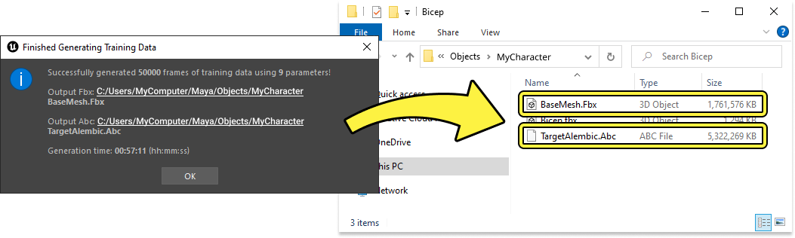
Файлы FBX и Alembic должны содержать одинаковое количество кадров, и каждый кадр должен соответствовать одной и той же позе скелета.
Теперь вы можете перенести готовые обучающие файлы в Unreal Engine.
Начните с импорта .abc файла, который вы создали либо в процессе обучения, либо с помощью другого внешнего инструмента для работы с деформацией. В браузере контента нажмите «Импорт», затем выберите .abc файл и нажмите «Открыть».
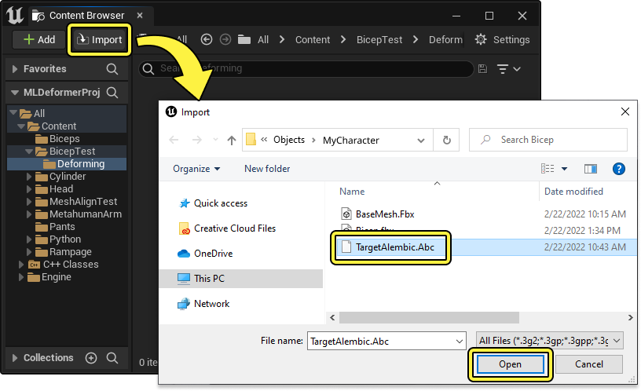
В диалоговом окне настроек импорта задайте следующие параметры: Установите для типа импорта значение Кэш геометрии. Отключите функцию Flatten Tracks. Это необходимо для сопоставления FBX-сетки с треками Alembic Geometry Cache. Если у вас всего одна сетка, вы можете оставить функцию Flatten Tracks включенной, но это не обязательно. Важно, чтобы названия треков Alembic начинались с того же слова, что и в обозревателе Maya. Установите значение точности сжатого положения на 0,001, чтобы обеспечить более высокую точность. Если оставить значение по умолчанию, ML Deformer может учитывать ошибки, возникающие при сжатии. Включите сохранение импортированных номеров вершин. Это необходимо для сопоставления вершин в скелетной сетке и геометрическом кэше. Если вы забудете это сделать, редактор ML Deformer выдаст предупреждение, и вам придется заново импортировать геометрический кэш.
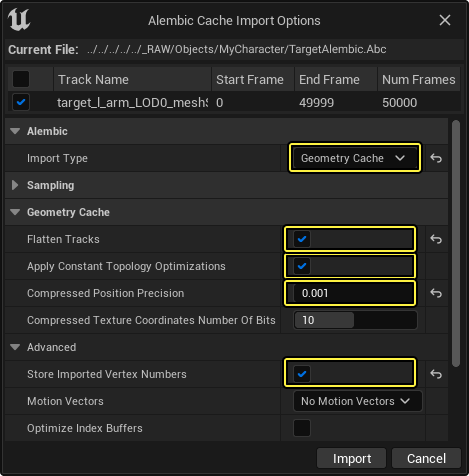
Настройка импорта кэша Alembic в Unreal Engine После настройки этих параметров нажмите «Импортировать», чтобы импортировать кэш геометрии. Этот процесс может занять очень много времени из-за размера файла alembic.
Далее вам нужно будет импортировать файл FBX, созданный на основе обучающих данных Maya. В диалоговом окне Параметры импорта FBX задайте следующие параметры импорта: Если вы уже импортировали своего персонажа в Unreal Engine, установите в поле Скелет значение скелета персонажа. Включить импорт анимации. Установите Длину анимации на Время экспорта.
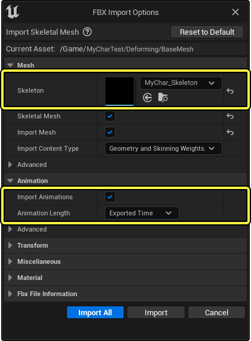
После установки этих параметров нажмите кнопку Импорт , чтобы импортировать формат FBX. Этот процесс может занять очень много времени из-за размера файла FBX.
Затем вы должны создать актив ML Deformer, чтобы содержать и коррелировать последовательности Alembic и FBX. В браузере контента используйте Добавить (+), чтобы выбрать Анимацию > Деформаторы > ML Deformer. Назовите ресурс и откройте его.
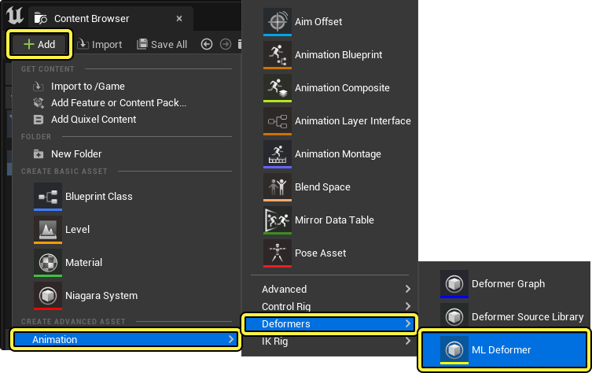
После открытия объекта ML Deformer вы можете выбрать модель данных для объекта, которая будет использоваться для обучения деформации сетки вашего персонажа. Выбранная модель окажет наибольшее влияние на конечный результат.
В раскрывающемся меню убедитесь, что выбрана модель Neural Morph, и что в режиме ML Defromer установлено значение Обучение.
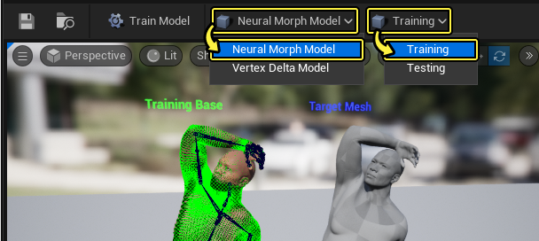
На панели «Сведения» в редакторе ML-деформаторов назначьте скелетную сетку вашего персонажа и импортированную обученную анимационную последовательность FBX соответствующим свойствам. После этого сетка появится под меткой «Обучающая база».
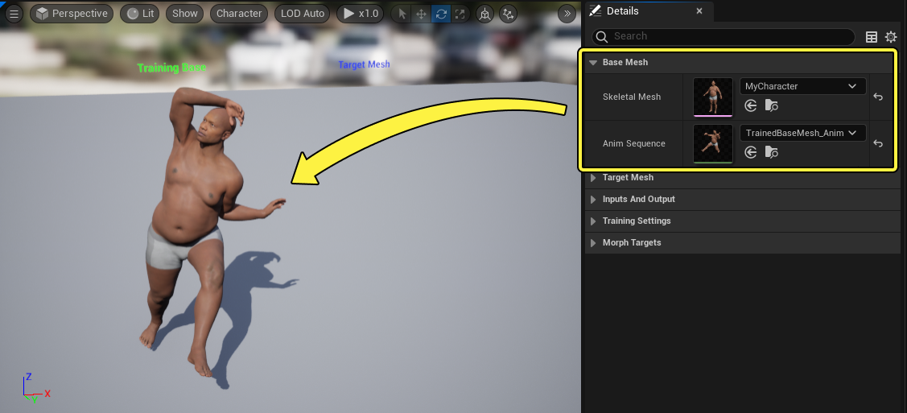
Также присвойте импортированный ресурс Geometry Cache из файла Alembic свойству Geometry Cache. После этого целевая сетка также появится в окне просмотра под меткой Training Target.
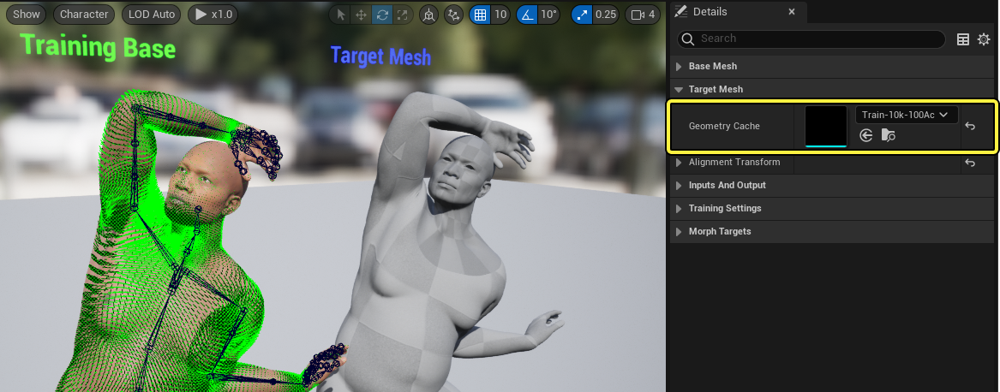
Над сеткой базовой модели для обучения появится зеленый отладочный рендер. Этот рендер показывает дельты, или различия, между базовой и целевой сетками. Убедитесь, что рендер выглядит корректно, так как модель деформации будет обучаться на основе этих дельт. Если целевая сетка повернута или смещена относительно базовой модели для обучения, вы можете использовать преобразование для выравнивания, чтобы выровнять их. Они не обязательно должны перекрываться, достаточно, чтобы совпадали поворот и масштаб. Если перетащить ползунок на временной шкале, обе последовательности будут синхронизированы, и вы сможете убедиться, что их анимационные позы совпадают. Убедитесь, что зеленый отладочный рендеринг (дельта) выглядит корректно в каждом кадре.
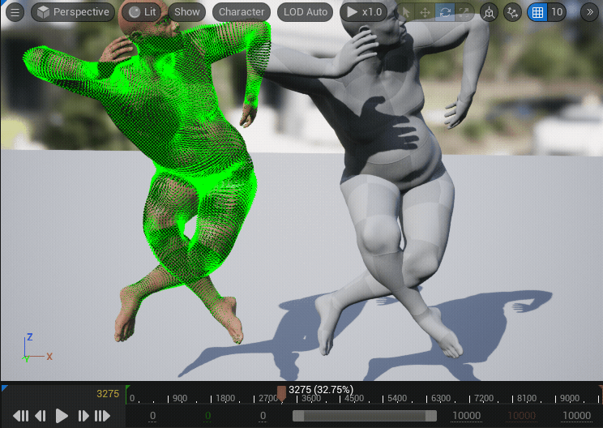
После создания и настройки объекта ML Deformer с использованием обучающей модели Neural Morph Model вы можете настроить входные параметры, чтобы влиять на результаты обучения и управлять ими.
В разделе Входные и выходные параметры на панели Сведения объекта ML Deformer вы можете указать кости или кривые из скелета сетки, на которые нужно ориентироваться при обучении модели. ML Deformer будет использовать повороты выбранных костей или дельты кривых, чтобы научиться деформировать сетку.
При использовании костных входных данных рекомендуется исключить из обучения скручивание и повороты, а также другие вспомогательные кости. Кроме того, при обучении деформации используются только указанные значения поворота кости, поэтому данные о смещении или масштабировании кости не влияют на результаты обучения. Ваш скелет может содержать вспомогательные кости в тех областях, где ML Deformer с трудом аппроксимирует целевую деформацию.
Вы можете вручную назначить кости в свойстве Список включаемых костей с помощью (+) «Добавить» и выбрать кости в раскрывающемся меню. Кроме того, вы можете воспользоваться кнопкой Только анимированные кости, чтобы автоматически заполнить свойство «Список включаемых костей» всеми костями скелетной сетки, содержащими данные об анимации.
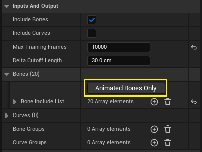
Однако если вы не удалите ни одну кость из автоматически сгенерированного списка, в качестве исходных данных будут использоваться все кости скелета. Как правило, это не приводит к наилучшему результату деформации, поэтому рекомендуется указывать только минимальный набор костей, от которых зависит деформация.
Например, вы можете исключить кости пальцев из списка включаемых костей, чтобы не выполнять сложную деформацию сетки для кистей рук. Сложные деформации небольших частей тела, таких как кисти рук или ступни, мало влияют на общий вид сетки и могут потребовать больших вычислительных ресурсов. Линейная скиннинг-деформация по-прежнему выполняется на сетке в сочетании с ML-деформацией, поэтому кости, исключенные из списка включаемых костей, будут деформироваться как обычно.
Как и в случае с костями, вы можете задать набор входных кривых, чтобы повлиять на обучение деформации сетки. С помощью кривых вы можете влиять на обучение деформации, используя данные, отличные от поворотов костей. Например, кривые могут быть полезны при создании анимации лица, когда значение кривой используется для контроля того, насколько открыто или закрыто веко или насколько приподнята левая внутренняя бровь.
Локальный режим нейронной морфологической модели в первую очередь учитывает деформации, вызванные отдельными костями. Это может привести к некоторым проблемам, если деформации в определенных частях сетки зависят от нескольких костей или кривых. Например, на область спины персонажа могут влиять как левая, так и правая ключицы. Для этого модель Neural Morph в локальном режиме поддерживает использование групп костей и групп кривых. С их помощью можно создавать наборы костей или кривых, которые работают вместе, создавая более реалистичную деформацию. Например, при создании группы костей для ключицы персонажа можно использовать (+) Добавить, чтобы создать новую группу костей, и выбрать кости плеча и позвоночника в раскрывающемся меню. Вот пример изображения, на котором показана группа костей, состоящая из костей левого и правого бедра.
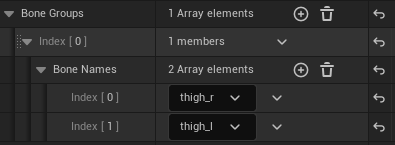
Каждая группа костей или кривых генерирует одинаковое количество целевых точек морфинга, определяемое свойством Количество целевых точек морфинга на кость/кривую.
На панели Подробности редактора ML Deformer установите для параметра «Режим обучения» значение Локальный.
По умолчанию при создании нового объекта ML Deformer с использованием модели Neural Morph для свойства Mode устанавливается значение Local.
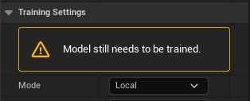
Настройки обучения режим могут существенно изменить принцип работы деформатора и типы возможных деформаций. При обучении модели деформатора можно выбрать один из следующих режимов:
После выбора режима настроек обучения нажмите кнопку Обучить модель на панели инструментов ML Deformer Editor, чтобы начать обучение.
В зависимости от сложности вашей сетки и обучающих данных этот процесс может занять много времени.
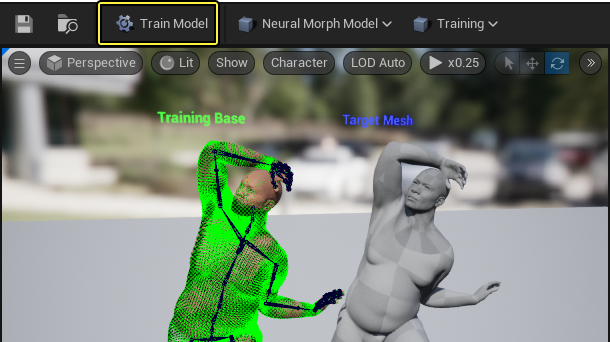
После завершения процесса обучения модели вы можете использовать свойства, указанные в настройках Сжатия объекта ML Deformer на панели Сведения, чтобы снизить общее потребление памяти и повысить производительность объекта-деформера.
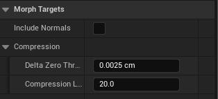
Здесь вы можете ознакомиться со списком настроек сжатия и описанием их функций:
Вы можете отслеживать результаты настройки сжатия, перейдя в редакторе ML Deformer на панель «Сведения» в раздел «Статистика».
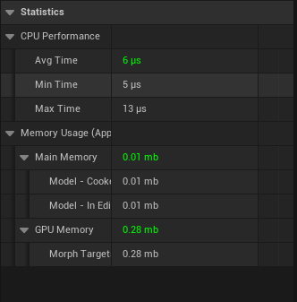
Статистика производительности процессора, готовой модели и памяти графического процессора дает представление о производительности вашего ассета ML Deformer в игре. Здесь вы можете ознакомиться со списком доступных показателей памяти и производительности, относящихся к ассету ML Deformer, а также с описанием их функций:
Указанные значения являются приблизительными, фактические значения могут отличаться.
После завершения процесса обучения вы можете просмотреть результаты в режиме тестирования ML Deformer.
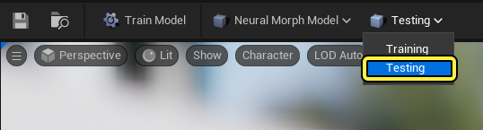
Вы можете настроить свойство Weight на панели Визуализация, чтобы увидеть, как деформированная с помощью машинного обучения сетка (справа) выглядит по сравнению с линейной сеткой (слева).
Включите свойство Показать тепловую карту и настройте параметры тепловой карты на панели Визуализация, чтобы увидеть визуальное представление областей сетки, деформируемых ML Deformer.
Чтобы начать использовать ML Deformer для персонажа на уровне, вам нужно настроить персонажа с помощью компонента ML Deformer в Blueprints. Начните с создания шаблона Actor. В браузере контента нажмите Добавить (+) >Класс Blueprint, затем выберите Actor. После создания шаблона откройте его.
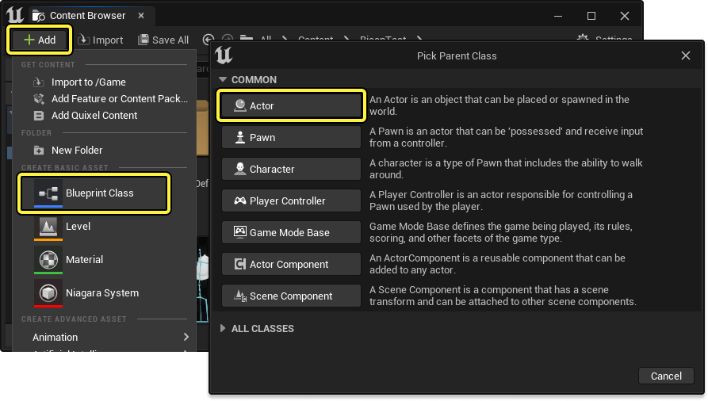
Добавьте скелетную сетку в Blueprint, перетащив ее из браузера контента на панель Компоненты.
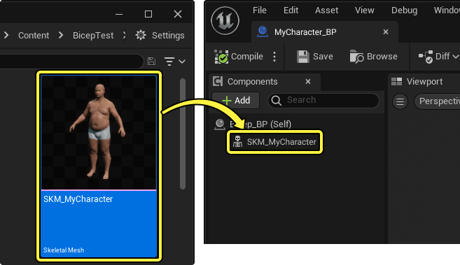
Затем добавьте компонент MLDeformer, нажав Добавить (+) на панели Компоненты и выбрав MLDeformer.
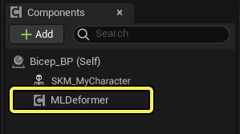
Выберите компонент MLDeformer и укажите ресурс ML Deformer на панели Сведения.
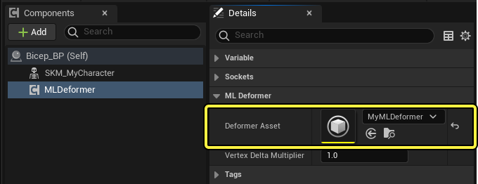
Добавьте объект ml deformer в компонент ml deformer на панели сведений Наконец, выберите компонент Skeletal Mesh и укажите граф деформаций в свойстве Mesh Deformer.
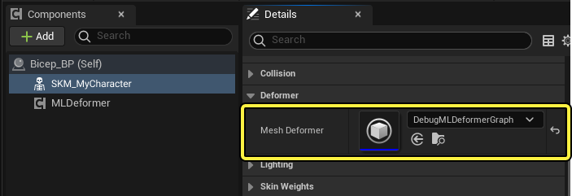
Если у вас нет графика-деформатора, вы можете использовать пример DefaultMLDeformerGraph, расположенный в Engine > Плагины> Содержимое MLDeformer > Деформаторы папка содержимого. Чтобы получить доступ к этой папке, нажмите на Настройки в браузере содержимого и включите как Показывать содержимое движка, так и Показывать содержимое плагина.
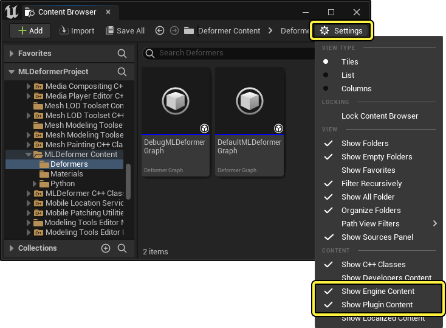
Дополнительную информацию о системе ML Defoamer в Unreal Engine можно найти на следующем ресурсе.
Более подробный обзор и справочную информацию о ML Deformer Framework, редакторе и моделях ML Deformer можно найти в документации